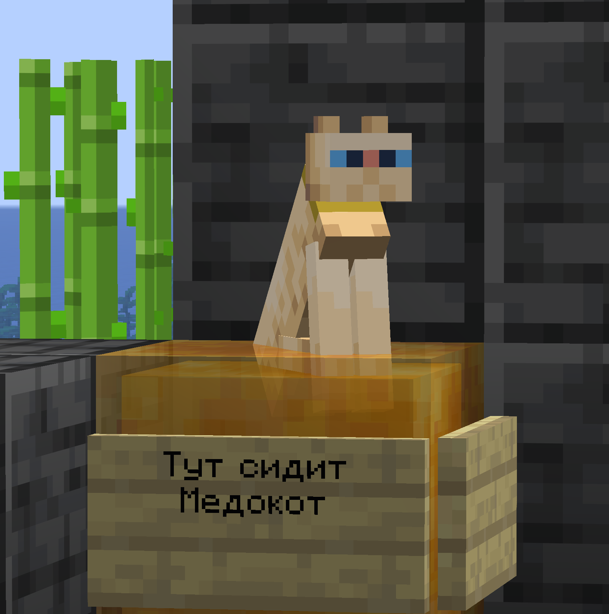

Пушистый хулиган заметил блок мёда ещё издалека, его привлёк сладкий запах, разносящийся по всей поляне. Лапы сразу прилипли к липкой поверхности, но кота это нисколько не смутило - он довольно зажмурился и замурлыкал, словно это был самый уютный лежак в мире.
Пчёлы кружили вокруг, недовольно жужжа, но подойти ближе боялись, ведь кот точил когти прямо об их драгоценный запас. Одна особо смелая пчела попыталась сесть ему на нос, но получила ленивый удар лапой и улетела в кусты. В конце концов трудолюбивые насекомые махнули крылом и улетели на ближайшее поле собирать нектар заново, решив, что связываться с этим рыжим нахалом себе дороже.